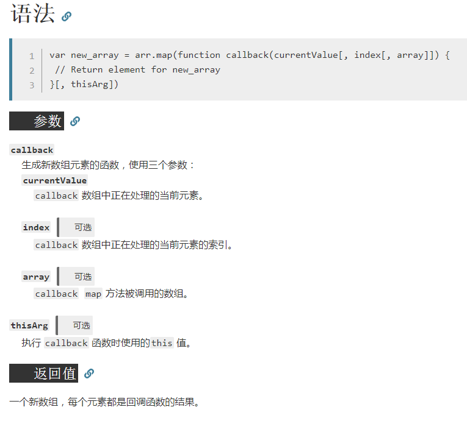

appendChild 1 2 3 let img = document.createElement("img") ... resultArea.appendChild(img);
classList contains 1 2 3 4 5 6 7 8 9 10 11 <div id="div1" class="class1 class3"></div> <div id="div2"></div> <script> a=document.getElementById("div1"); b=document.getElementById("div2"); c=a.classList.contains("class1"); d=a.classList.contains("class2"); e=a.classList.contains("class3"); b.textContent=c.toString()+" "+d.toString()+" "+e.toString(); </script>
className 1 2 3 result.className = "result"; ... name.className = "name";
CSS变量 1 task.line.parentElement.style.setProperty("--max-delay", maxDelay);
for in 1 2 3 4 5 6 var person = {fname:"jone",lname:"Doe",age:25} var text= '' var x; for(x in person){ text +=person[x] + ""; }
forEach 1 2 3 4 5 6 array.forEach(function (item, i) { // The following code logs a line for each element in an array: // function logArrayElements(element, index, array) { // console.log('a[' + index + '] = ' + element); // } //
HTML转换为文本 1 2 3 4 5 <script> a="<span>AAAAA</span><div>BBBBB</div>"; a=a.replace(/<(?:.|\n)*?>/gm, ''); console.log(a); </script>
isNaN 1 2 3 const b = parseFloat(a.substring(i+1,j)); if(isNaN(b)) { ...
JSON格式 1 2 3 4 5 6 7 8 9 10 11 12 13 14 15 16 data1 = { Vultr: [{ name: "Frankfurt", url: "http://fra-de-ping.vultr.com/", download: "http://fra-de-ping.vultr.com/vultr.com.100MB.bin" }, { name: "Amsterdam", url: "http://ams-nl-ping.vultr.com/", download: "http://ams-nl-ping.vultr.com/vultr.com.100MB.bin" }, ... "EC2 (No Download)": [{ name: "North Virginia", url: "http://18.204.0.0/" }, ...

Object.entries forEach 1 2 3 4 5 6 7 8 9 10 11 12 13 14 15 Object.entries(data).forEach(function (pair) { // Object.entries... // const object2 = { 0: 'a', 1: 'b', 2: 'c' }; // console.log(Object.entries(object2)[2]); // expected output: Array ["2", "c"] // // forEach... // var array1 = ['a', 'b', 'c']; // array1.forEach(function(element) { // console.log(element); // }); // expected output: "a" // expected output: "b" // expected output: "c" //
Object.keys 1 2 3 4 dataKeys = Object.keys(data); for(i=0;i<=dataKeys.length-1;i++) { dataEntry = data[dataKeys[i]]; ...
parseInt 1 2 3 4 <script> var n = parseInt("2018@geeksforgeeks"); console.log(n); //2018 </script>
push 1 2 3 4 5 tasks.push(subtasks); // The push() method adds one or more elements // to the end of an array // and returns the new length of the array. //
querySelector 1 const resultArea = document.querySelector("#result");
querySelectorAll 1 2 3 4 5 6 7 8 9 10 11 12 13 <div class="a"></div> <div class="a"></div> <div class="a"></div> <script> a=document.querySelectorAll(".a"); for(i=0;i<=a.length-1;i++) { a[i].innerHTML=123; } //123 //123 //123 </script>
requestAnimationFrame 1 2 3 4 5 6 7 8 9 10 11 let nextTick = window.requestAnimationFrame || window.setTimeout // The delay function // The window.requestAnimationFrame() method tells the browser // that you wish to perform an animation and requests // that the browser call a specified function // to update an animation before the next repaint. // ... function handleTasks() { ... nextTick(handleTasks);
shift 1 2 3 4 5 currentSubTasks = tasks.shift(); ... // The shift() method removes the first element // from an array and returns that removed element. //
sort 1 2 3 newRankListSort.sort(function (a,b) { return a.milliseconds - b.milliseconds; });
splice 1 2 3 4 5 6 7 <script> var list = ["foo", "bar"]; list.splice(1, 0, "baz", "qux"); console.log(list); // (4) ["foo", "baz", "qux", "bar"] list.splice(1,2); console.log(list);//(2) ["foo", "bar"] </script>
textContent 1 2 const el = document.createElement(tag); el.textContent = text;
toFixed 1 document.getElementById("speed").innerText = (mb/seconds).toFixed(3).toString() + " MBps";
void(0)获取undefined void 运算符 对给定的表达式进行求值，然后返回 undefined。
1 void 0 === undefined //true
undefined在JavaScript中并不属于保留字/关键字，因此在IE5.5~8中我们可以将其当作变量那样对其赋值（IE9+及其他现代浏览器中赋值给undefined将无效）
这个运算符能向期望一个表达式的值是undefined的地方插入会产生副作用的表达式。
void 运算符通常只用于获取 undefined的原始值，一般使用void(0)（等同于void 0）。在上述情况中，也可以使用全局变量undefined来代替（假定其仍是默认值）。
“…” 1 Math.max(...this.state.millisecondsOfTargets)
保存this然后回调函数使用 1 2 3 4 5 6 7 8 9 10 11 12 13 let obj = { myVar: 'foo', myFunc: function() { let self = this console.log(this.myVar) setTimeout(function() { console.log(self.myVar) }, 1000) } } obj.myFunc() // foo ... then... foo
判断变量类型 1 2 3 4 5 6 7 8 9 10 <script> a={}; b=[]; c=1; d="a"; console.log(Object.prototype.toString.call(a)); //[object Object] console.log(Object.prototype.toString.call(b)); //[object Array] console.log(Object.prototype.toString.call(c)); //[object Number] console.log(Object.prototype.toString.call(d)); //[object String] </script>
判断字符串是否为数字 1 2 3 4 5 6 7 8 9 10 isNaN(num) //如果是数字的话返回false isNaN(123) //false isNaN('123') //false isNaN('1e10000') //false (被转义成 Infinity ,是number类型) isNaN('foo') //true isNaN('10px') //true function isNumberic(num){ return !isNaN(num) }
复制数据 1 2 3 4 5 let newRankListWithNewData = JSON.parse(JSON.stringify(this.state.rankList)); let newMillisecondsOfTargets = this.state.millisecondsOfTargets.slice(); (JavaScript Array slice() Method) (The slice() method returns a shallow copy)
字符串split分裂为数组 1 2 var str = "How are you doing today"; var res = str.split(" ")
数组concat合并两个数组 1 2 3 4 var array1=['a','b','c'] var array2=['d','e','f'] console.log(array1.concat(array2)); //(6) ["a", "b", "c", "d", "e", "f"]
数组filter过滤生成新数组 1 2 3 4 5 6 var words = ['spray', 'limit', 'elite', 'exuberant', 'destruction', 'present']; const result = words.filter(word => word.length > 6); console.log(result); // expected output: Array ["exuberant", "destruction", "present"]
数组includes判断是否包含元素 1 2 3 4 5 6 7 8 9 10 11 12 var array1 = [1, 2, 3]; console.log(array1.includes(2)); // expected output: true var pets = ['cat', 'dog', 'bat']; console.log(pets.includes('cat')); // expected output: true console.log(pets.includes('at')); // expected output: false
数组indexOf查找元素的下标 1 2 3 4 5 6 7 8 9 10 11 var beasts = ['ant', 'bison', 'camel', 'duck', 'bison']; console.log(beasts.indexOf('bison')); // expected output: 1 // start from index 2 console.log(beasts.indexOf('bison', 2)); // expected output: 4 console.log(beasts.indexOf('giraffe')); // expected output: -1
数组map对应生成新数组 1 2 3 4 5 6 7 var array1 = [1, 4, 9, 16]; // pass a function to map const map1 = array1.map(x => x * 2); console.log(map1); // expected output: Array [2, 8, 18, 32]
数组元素join合并为字符串 1 2 3 4 5 6 7 8 9 10 var elements = ['Fire', 'Air', 'Water']; console.log(elements.join()); // expected output: "Fire,Air,Water" console.log(elements.join('')); // expected output: "FireAirWater" console.log(elements.join('-')); // expected output: "Fire-Air-Water"
普通函数的this 1.默认情况下（非严格模式），没有找到直接调用者，this指向window
2.严格模式（’use strict’），没有找到直接调用者，this是undefined
3.this总是代表它的直接调用者，比如：obj.fun，那么fun中的this是obj
4.使用call，apply，bind绑定的this指向的是绑定的对象
替换文本 1 2 3 4 5 6 7 8 9 10 11 <script> function escapeRegExp(string){ return string.replace(/[.*+?^${}()|[\]\\]/g, "\\$&"); } function replaceAll(str, term, replacement) { return str.replace(new RegExp(escapeRegExp(term), 'g'), replacement); } a="test*SPACE*test"; a=replaceAll(a,"*SPACE*"," ") console.log(a); //test test </script>
毫秒数值 1 2 3 4 startTime = new Date().getTime(); ... endTime = new Date().getTime(); const seconds = (endTime-startTime)/1000;
浏览器宽度 1 2 3 4 5 6 7 8 9 var x=window.innerWidth; if(x==undefined) { x=document.documentElement.clientWidth; } if(x==undefined) { x=document.body.clientWidth; }
箭头函数作为回调函数可用this 1 2 3 4 5 6 7 8 9 10 11 12 let obj = { myVar: 'foo', myFunc: function() { console.log(this.myVar) setTimeout(() => { console.log(this.myVar) }, 1000) } } obj.myFunc() // foo ... then... foo
箭头函数语法 1 2 3 4 5 6 7 8 9 10 11 12 13 14 15 16 17 18 19 20 21 22 23 (参数1, 参数2, …, 参数N) => { 函数声明 } //相当于：(参数1, 参数2, …, 参数N) =>{ return 表达式; } (参数1, 参数2, …, 参数N) => 表达式（单一） // 当只有一个参数时，圆括号是可选的： (单一参数) => {函数声明} 单一参数 => {函数声明} // 没有参数的函数应该写成一对圆括号。 () => {函数声明} //加括号的函数体返回对象字面表达式： 参数=> ({foo: bar}) //支持剩余参数和默认参数 (参数1, 参数2, ...rest) => {函数声明} (参数1 = 默认值1,参数2, …, 参数N = 默认值N) => {函数声明} //同样支持参数列表解构 let f = ([a, b] = [1, 2], {x: c} = {x: a + b}) => a + b + c; f(); // 6
···